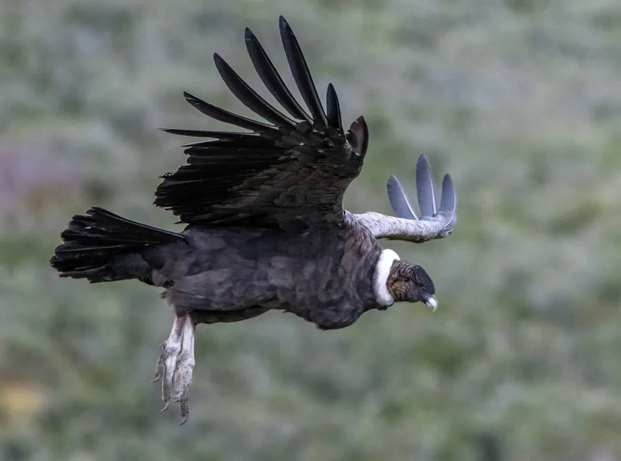

鸟类 · 动物界
安第斯神鹫 Vultur gryphus

南美洲安第斯山脉的巨型食腐鸟，翼展超过 3 米，雄鸟头顶长着肉冠，是智利、哥伦比亚等国的国鸟。
- 分类
- 门脊索动物门纲鸟纲目美洲鹫目科美洲鹫科属神鹫属
- 栖息环境
- 安第斯山脉的高山、峡谷与高原，常在悬崖绝壁上栖息和营巢
- 地理分布
- 南美洲安第斯山脉，从委内瑞拉、哥伦比亚至智利和阿根廷
- 保护级别
- IUCN 易危（VU）；非中国分布物种
物种志
安第斯神鹫体长 100–130 cm，体重 11–15 kg，翼展 270–320 cm，是现存翼展最大的猛禽之一。成鸟通体黑色，初级飞羽有白色斑块，颈部裸露，喉部皮肤松弛；雄鸟头顶有一个鲜红色的肉冠，脖子下方有肉垂，雌鸟没有肉冠。它的眼睛周围有红色裸皮，喙钩曲而有力。
安第斯神鹫分布于南美洲西部的安第斯山脉，从委内瑞拉、哥伦比亚一直到智利和阿根廷，栖息在海拔 3000–5000 米的高山和峡谷。它们以大型动物的尸体为主食，也吃鸟蛋和雏鸟，常借山间的上升气流长时间滑翔，一次可飞行数百千米。繁殖期在悬崖洞穴中产卵，每窝 1 枚，孵化约 54–58 天，育雏期将近一年。由于栖息地减少、误食毒饵和偷猎，全球种群数量下降，被列为易危物种。
形态与习性
- 食性大型动物尸体为主，也吃鸟蛋和雏鸟
- 体长100–130 cm
- 体重11–15 kg
- 翼展270–320 cm
- 繁殖每窝 1 枚卵，孵化约 54–58 天
- 寿命野外可超过 50 年
- 文化地位智利和哥伦比亚的国鸟
趣味知识
- 安第斯神鹫的翼展可超过 3 m，是现存翼展最大的猛禽之一。
- 雄鸟头顶有一块鲜红色的肉冠，雌鸟则没有。
- 它们是南美洲的象征，被智利和哥伦比亚定为国鸟。
- 安第斯神鹫能借山地上升气流滑翔数百千米而几乎不拍翅。